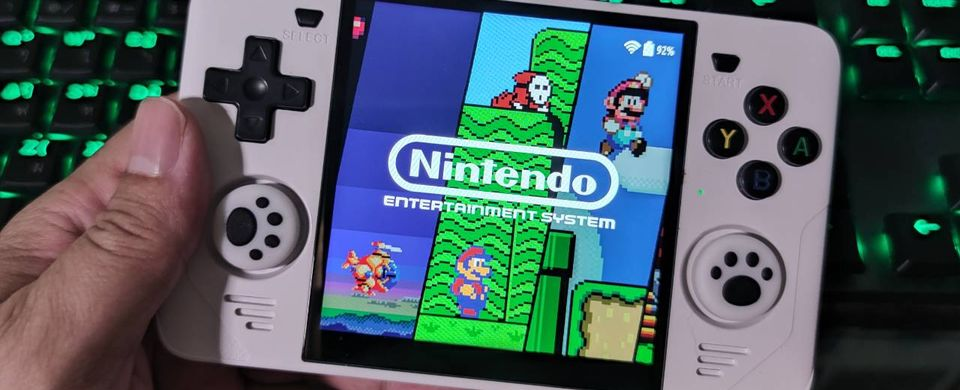

การตั้งค่า POWKIDDY RGB30 บน ROCKNIX OS

มาบันทึกการตั้งค่าต่าง ๆ บน RGB30 เผื่อทำพลาดข้อมูลหาย จะได้มีที่นี่เก็บไว้สำรอง
ROCKNIX OS
ข้อดี:
- ออกแบบมาให้สามารถปรับแต่ง RetroArch จาก Emulation Station ได้เลย สามารถระบุได้เลยว่าแต่ละ Core ใช้การตั้งค่าอย่างไรบ้าง
- สามารถเลือก GPU Driver เป็น Panfrost ทำให้ตัว RetroArch สามารถใช้งาน glcore โดยตัว UI ยังสามารถทำงานได้ปกติ ถ้าเป็น ArkOS จะกลายเป็นกล่องสี่เหลี่ยมที่เป็นพื้นสีรุ้ง
- เมื่อใช้ video driver เป็น glcore ทำให้เลือกใช้ Shaders ที่เป็น *.slang ได้
- รองรับ SAMBA และ SSH สามารถโอนไฟล์ผ่าน Wi-Fi ด้วย Windows Explorer ได้ หรือจะใช้โปรแกรม Remote SSH FTP ก็ได้
- รองรับ HTTP Server ในตัว โอนไฟล์ผ่านเบราเซอร์ได้
สำหรับเรื่อง glcore มันมีเรื่องของประสิทธิภาพด้วย สามารถอ่านเพิ่มเติมได้ที่ libretro.com
ข้อด้อย:
- ในโหมด Standby ใช้แบตเตอรี่ประมาณ 1-2% ต่อการ sleep 1 ชั่วโมง ก็ยังถือว่าเยอะอยู่ดี
- มีปัญหาในการชาร์จแบตเตอรี่ตอนที่ปิดเครื่อง บางทีไฟเข้า บางทีไฟหาย สรุปต้องเปิดเครื่องแล้วชาร์จ
การตั้งค่าสำหรับเกมที่ใช้หน้าจอ 4:3
เนื่องจากเกมที่มีขนาด 4:3 จะมีปัญหา pixel เหลื่อมกัน ถ้ากำหนดเป็น bilinear filtering ภาพก็จะเบลอ เป็นคนไม่ชอบภาพแบบนี้ เลยพยายามหา Shaders ที่เบลอไม่เยอะ และตัว pixel เวลาบีบแล้วไม่เหลื่อมกัน เกลี่ยออกมาบนหน้าจอเวลาภาพ scroll แล้วไม่เป็นคลื่นหรือเป็นรอยฉีก ตัว Sharder ที่ใช้คือ crt\shaders\crt-geom-mini.slang Version 450 เคยเอา Version อื่นมาลองภาพออกมาไม่สว่างไป ก็ภาพดูไม่เนียน
source code ของ crt-geom-mini.slang Version 450
#version 450
// This program is free software; you can redistribute it and/or modify it
// under the terms of the GNU General Public License as published by the Free
// Software Foundation; either version 2 of the License, or (at your option)
// any later version.
layout(push_constant) uniform Push {
vec4 SourceSize;
vec4 OriginalSize;
vec4 OutputSize;
uint FrameCount;
float CURV;
float SCAN;
float MASK;
float LUM;
float INTERL;
float SAT, LANC;
}
params;
// Parameter lines go here:
#pragma parameter CURV "CRT-Geom Curvature"
1.0 0.0 1.0 1.0
#pragma parameter SCAN "CRT-Geom Scanline Weight"
0.25 0.2 0.6 0.05
#pragma parameter MASK "CRT-Geom Dotmask Strength"
0.15 0.0 0.5 0.05
#pragma parameter LUM "CRT-Geom Luminance"
0.05 0.0 0.5 0.01
#pragma parameter INTERL "CRT-Geom Interlacing Simulation"
1.0 0.0 1.0 1.0
#pragma parameter SAT "CRT-Geom Saturation"
1.1 0.0 2.0 0.01
#pragma parameter LANC "Filter profile: Accurate/Fast"
0.0 0.0 1.0 1.0
#define PI 3.1415926535897932384626433
#define SourceSize params.SourceSize
#define OriginalSize params.OriginalSize
#define OutputSize params.OutputSize
#define FrameCount params.FrameCount
#define CURV params.CURV
#define SCAN params.SCAN
#define MASK params.MASK
#define LUM params.LUM
#define INTERL params.INTERL
#define SAT params.SAT
#define LANC params.LANC
layout(std140, set = 0, binding = 0) uniform UBO {
mat4 MVP;
}
global;
#pragma stage vertex
layout(location = 0) in vec4 Position;
layout(location = 1) in vec2 TexCoord;
layout(location = 0) out vec2 vTexCoord;
layout(location = 1) out vec2 scale;
layout(location = 2) out vec2 warpp;
layout(location = 3) out vec2 warp;
layout(location = 4) out float fragpos;
void main() {
gl_Position = global.MVP * Position;
vTexCoord = TexCoord * 1.0001;
scale = SourceSize.xy / OriginalSize.xy;
warpp = vTexCoord.xy * scale;
fragpos = warpp.x * OutputSize.x * PI;
warp = warpp * 2.0 - 1.0;
}
#pragma stage fragment
layout(location = 0) in vec2 vTexCoord;
layout(location = 0) out vec4 FragColor;
layout(location = 1) in vec2 scale;
layout(location = 2) in vec2 warpp;
layout(location = 3) in vec2 warp;
layout(location = 4) in float fragpos;
layout(set = 0, binding = 1) uniform sampler2D Source;
float scan(float pos, vec3 color) {
float wid = SCAN + 0.1 * max(max(color.r, color.g), color.b);
float weight = pos / wid;
return LUM + (0.1 + SCAN) * exp(-weight * weight) / wid;
}
vec2 Warp(vec2 pos) {
pos = warp;
pos *= vec2(1.0 + pos.y * pos.y * 0.031, 1.0 + pos.x * pos.x * 0.05);
pos = pos * 0.5 + 0.5;
return pos;
}
void main() {
vec2 pos;
if (CURV == 1.0) pos = Warp(warpp);
else pos = vTexCoord;
vec2 corn = min(pos, 1.0 - pos); // This is used to mask the rounded
corn.x = 0.0001 / corn.x; // corners later on
if (CURV == 1.0) pos /= scale;
// Lanczos 2
// Source position in fractions of a texel
vec2 src_pos = pos * SourceSize.xy;
// Source bottom left texel centre
vec2 src_centre = floor(src_pos - 0.5) + 0.5;
// f is position. f.x runs left to right, y bottom to top, z right to left, w top to bottom
vec4 f;
f.xy = src_pos - src_centre;
f.zw = 1.0 - f.xy;
// Calculate weights in x and y in parallel.
// These polynomials are piecewise approximation of Lanczos kernel
// Calculator here: https://gist.github.com/going-digital/752271db735a07da7617079482394543
vec4 l2_w0_o3, l2_w1_o3;
if (LANC == 0.0) {
l2_w0_o3 = (((1.5672) * f - 2.6445) * f + 0.0837) * f + 0.9976;
l2_w1_o3 = (((-0.7389) * f + 1.3652) * f - 0.6295) * f - 0.0004;
} else {
l2_w0_o3 = (-1.1828) * f + 1.1298;
l2_w1_o3 = (0.0858) * f - 0.0792;
}
vec4 w1_2 = l2_w0_o3;
vec2 w12 = w1_2.xy + w1_2.zw;
vec4 wedge = l2_w1_o3 * vec4(w12.yx, w12.yx);
// Calculate texture read positions. tc12 uses bilinear interpolation to do 4 reads in 1.
vec2 tc12 = SourceSize.zw * (src_centre + w1_2.zw / w12);
vec2 tc0 = SourceSize.zw * (src_centre - 1.0);
vec2 tc3 = SourceSize.zw * (src_centre + 2.0);
// Sharpening adjustment
float sum = wedge.x + wedge.y + wedge.z + wedge.w + w12.x * w12.y;
wedge /= sum;
vec3 res = vec3(
texture(Source, vec2(tc12.x, tc0.y)).rgb * wedge.y +
texture(Source, vec2(tc0.x, tc12.y)).rgb * wedge.x +
texture(Source, tc12.xy).rgb * (w12.x * w12.y) +
texture(Source, vec2(tc3.x, tc12.y)).rgb * wedge.z +
texture(Source, vec2(tc12.x, tc3.y)).rgb * wedge.w
);
float fp = fract(src_pos.y - 0.5);
if (OriginalSize.y > 400.0) fp = fract(src_pos.y / 2.0 - 0.5);
if (INTERL == 1.0 && OriginalSize.y > 400.0) {
fp = mod(float(FrameCount), 2.0) < 1.0 ? 0.5 + fp : fp;
}
float scn = scan(fp, res) + scan(1.0 - fp, res);
float msk = MASK * sin(fragpos) + 1.0 - MASK;
res *= sqrt(scn * msk);
float l = dot(vec3(0.29, 0.6, 0.11), res);
res = mix(vec3(l), res, SAT);
if (corn.y <= corn.x && CURV == 1.0 || corn.x < 0.0001 && CURV == 1.0) res = vec3(0.0);
FragColor = vec4(res, 1.0);
}
Shader Parameters สำหรับไฟล์ slangp แต่ละ Core ให้ตั้งค่าดังนี้
shaders = "1"
# make sure path to slang file is correct
shader0 = "/tmp/shaders/crt/shaders/crt-geom-mini.slang"
filter_linear0 = "true"
wrap_mode0 = "clamp_to_border"
mipmap_input0 = "false"
alias0 = ""
float_framebuffer0 = "false"
srgb_framebuffer0 = "false"
scale_type_x0 = "viewport"
scale_x0 = "1.000000"
scale_type_y0 = "viewport"
scale_y0 = "1.000000"
# Monitor border curve 1 | 0
CURV = "0.0"
# Scanline weight 0.0 - 0.6
SCAN = "0.6"
# Dotmask Strength 0.0 - 0.5
MASK = "0.5"
# Luminance 0.0 - 0.5
LUM = "0.0"
# Saturation 0.0 - 2.0
SAT = "1.0"
เช่น Core ของ FinalBurn Neo ให้สร้างไฟล์ /storage/.config/retroarch/config/FinalBurn Neo/FinalBurn Neo.slangp
หากต้องการให้เอาไปใช้กับทุก Core ให้บันทึกใน Global Preset ที่ /storage/.config/retroarch/config/global.slangp
การเล่น NES SNES แบบเต็มหน้าจอแบบ Pixel Perfect
วิธีนี้ใช้กับเกมส่วนมากที่ออกมาแบบมาให้เผื่อขอบหายจากทีวีที่แสดงภาพแบบ CRT ดังนั้น pixel บริเวณขอบซ้ายขวาเลยไม่ค่อยมีปัญหาเวลาเล่นเท่าไหร่ ให้ตั้งค่าตามภาพ

เวลาแสดงภาพก็จะมีบาง pixel ซ้ายขวาที่หายไป แต่ส่วนใหญ่ก็เล่นได้ไม่มีปัญหา
แสดงแบบจอ Pixel โบราณบน Pico-8
Shader ที่เหมาะสมกับเกมที่มีความละเอียดต่ำมาก ๆ เช่น Pico-8 ที่ใช้งานแล้วเหมือนหน้าจอเกมโบราณ คือ handheld/shaders/lcd-cgwg/lcd-grid.slang
การเลือกโทนสีสำหรับ GameBoy Color